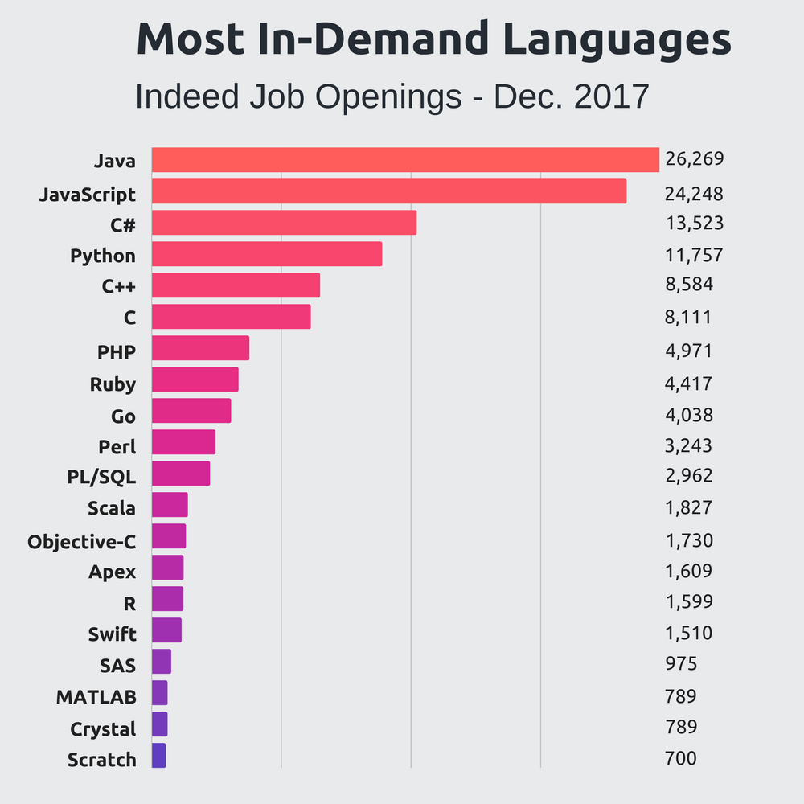
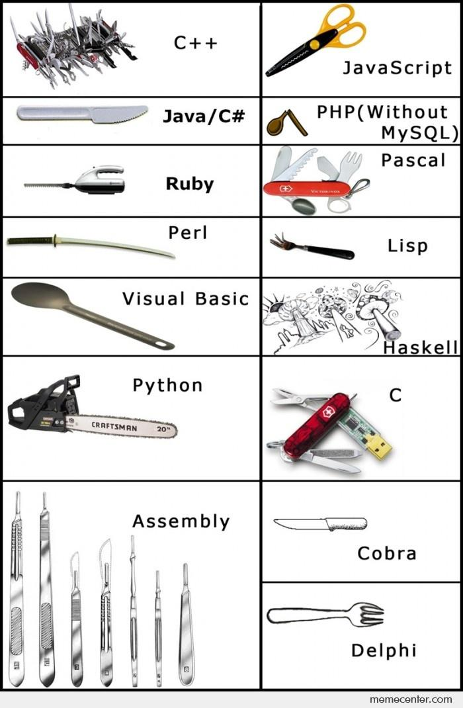
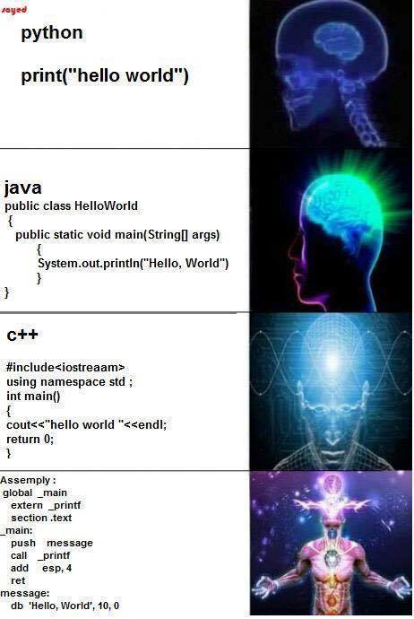

| Name | Date | Information |
| Plankalkül (Plan Calculus) | 1945 | Konrad Zuse begins work on the first algorithmic programming language. Several years later, he will develop the first binary digital computer. |
| Fortran | 1957 | A powerful scientific computing language developped by an IBM team. |
| COBOL | 1960 | COmmon Business-Oriented Language |
| ASCII | 1963 | American Standard Code for Information Interchange |
| BASIC | 1964 | Beginner's All-purpose Symbolic Instruction Code. |
| ALGOL 58 | 1958 | This language influenced by Fortran and Plankalkül introduced the notion of the compound statement. |
| Pascal | 1970 | Named after Blaise Pascal, this language was introduced by Professor Niklaus Wirth. It is based on ALGOL 60. |
| C | 1972 | Developped by Dennis Ritchie, this language is still massively used today. |
| Assembly 68000 | 1985 | Released by Motorola with the 68000 microprocessor. |
| C++ | 1985 | Dominant Object-Oriented Language. |
| Perl | 1987 | Practical Extraction and Report Language. |
| Python | 1991 | Interpreted language |
| Java | 1995 | Java 1.0 was introduced by Sun Microsystems. |
  